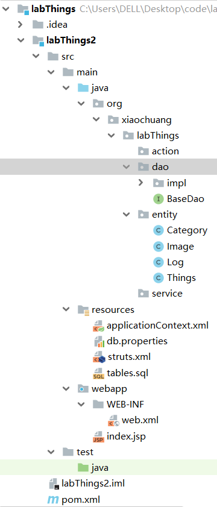

intellij中使用 maven整合 SSH框架
csdn参考教程
步骤：

1.新建项目时选择maven项目，选择ssh框架模板工具包（archetypes）
但没有现成的官方SSH模板，可以创建一个空的再自行添加依赖并配置目录结构，内容详见
pom.xml
在pom.xml中，可以看到，版本可以使用全局的properties标签统一配置
2.编写spring的配置文件
在src/main/resources下面建立两个文件，一个是applicationContext.xml，一个是db.properties;
applicationContext.xml
在xml中使用<context:property-placeholder location="classpath:db.properties" />可以阅读属性文件
点击configure application context后，项目中就自动添加了spring框架属性
3.连接数据库，并生成持久层代码
其中需要在projest structure中为项目添加hibernate属性，这样才会出现persistence界面
将session factory选为默认sessionFactory，即application context
4.现在项目比之前多了一个service层，